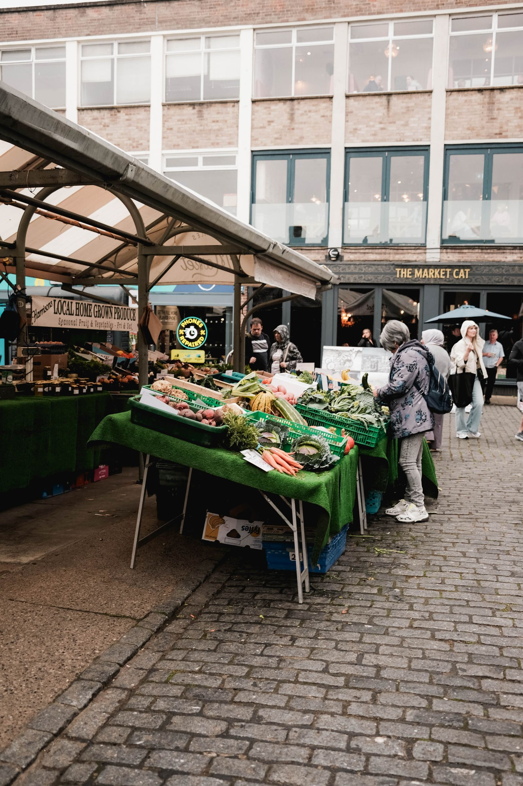

Autumn 2025 · The expansion
The year the Long Row filled
What was asked
By spring 2025 the waiting list had seventeen traders on it and the town was asking why its harvest market turned people away. The ground, though, was the same sloping field it had always been: 24 pitches was what the plan allowed without squeezing the walkways.
What I did
I had the field re-surveyed in March and walked it with the traders in April. The walkway along the Abbey Wall was a metre wider than anyone used; taking it back, and moving the water standpipe to the middle of Row B, gave six new pitches without narrowing a single aisle below two metres.
What came of it
All 30 pitches were booked by September, eleven of them to first-time traders. Harvest Home drew a gate of 6,200, the market's best day. Ten of the eleven newcomers rebooked for 2026 — the one who didn't was offered her fee back and a place on the list, because the pitch she'd taken was wrong for her stock and that was my misjudgement, not hers.
